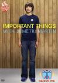

Important Things With Demetri Martin
Stephen Klancher
...has seen 5
...has seen 1.9 hours
...has not seen 4.6 hours

Timeline
Most Recent:
Safety
First Unseen:
Coolness (# 6)
...has seen 5
...has seen 1.9 hours
...has not seen 4.6 hours
Timeline
Most Recent:
Safety
First Unseen:
Coolness (# 6)


Stephen Klancher: August 11, 2009 
Choosing either chair will land you in 1984's room 101. Also, "That's the closest that balls of any species have been to my face."
Stephen Klancher: October 24, 2009
Bill Pullman is the world's most forgettable actor. Do not use him as your safe word. Also "Witches hate lamb's blood; They're actually allergic to it. That is how you prevent the witch from casting the spell that makes the woman pregnant."